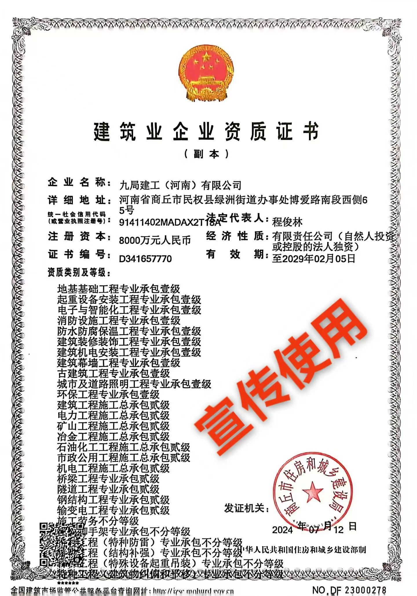

九局建工（河南）有限公司
详细地址：河南省商丘市民权县绿洲街道办事处博爱路南段西侧65号
统一社会代码（营业执照注册号）：91411402MADAX2T18A
法人代表：程俊林
注册资本：8000万元
成立日期：2024年1月26日
证书编号：D341657770
经济性质：有限责任公司（自然人投资或控股的法人独资）
有效期：2029年2月5日
发证机关：商丘市住房和城乡建设局
公司介绍
九局建工（河南）有限公司
地基基础工程专业承包壹级
起重设备安装工程专业承包壹级
电子与智能化工程专业承包壹级
消防设施工程专业承包壹级
防水防腐保温工程专业承包壹级
建筑装修装饰工程专业承包壹级
建筑机电安装工程专业承包壹级
建筑幕墙工程专业承包壹级
古建筑工程专业承包壹级
城市及道路照明工程专业承包壹级
环保工程专业承包壹级
建筑工程施工总承包贰级
电力工程施工总承包贰级
矿山工程施工总承包贰级
冶金工程施工总承包贰级
石油化工工程施工总承包贰级
市政公用工程施工总承包贰级
机电工程施工总承包贰级
桥梁工程专业承包贰级
隧道工程专业承包贰级
钢结构工程专业承包贰级
输变电工程专业承包贰级
施工劳务不分等级
模板脚手架专业承包不分等级
特种工程（特种防雷）专业承包不分等级
特种工程（建筑物纠偏和平移）专业承包不分等级
特种工程（特种设备起重吊装）专业承包不分等级
特种工程（结构补强）专业承包不分等级